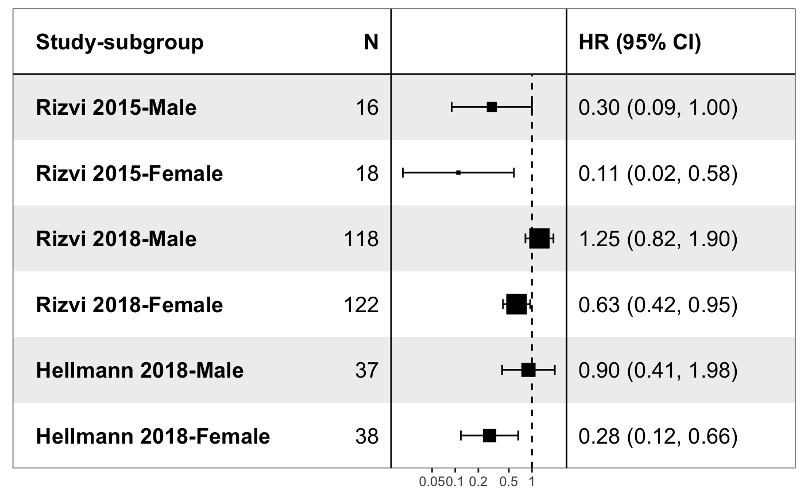
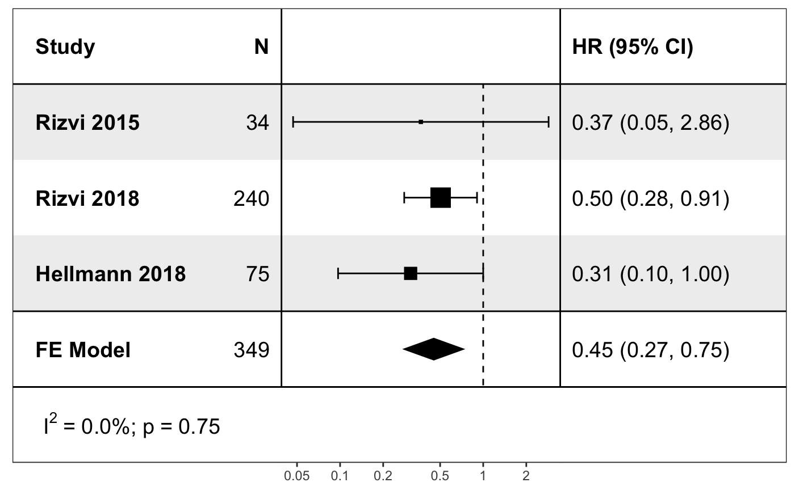

deft_show.RdShow deft result
deft_show(deft, element, study_labels = NULL, headings = list(study = ifelse(element == "all", "Study-subgroup", "Study"), n = "N", measure = NULL, ci = "HR (95% CI)"), trans = base::exp, show_model = ifelse(element == "all", FALSE, TRUE), show_stats = list(`I^2` = rlang::quo(sprintf("%0.1f%%", I2)), p = rlang::quo(format.pval(QEp, digits = 2))), ...)
| deft | result from deft_do. |
|---|---|
| element | 'all' or 'subgroup'. |
| study_labels | labels for studies. |
| headings | a list for controlling plot headings. |
| trans | an optional transform function used on the numeric data for plotting the axes |
| show_model | if `TRUE`, show model result, otherwise only show forest plot for studies. |
| show_stats | a |
| ... | other arguments except 'panels', 'trans', 'study_labels',
and 'show_stats' passed to |
a ggplot object
data("wang2019") res <- deft_do(wang2019, group_level = c("Male", "Female")) p1 <- deft_show(res, "all") p1p2 <- deft_show(res, "subgroup") p2